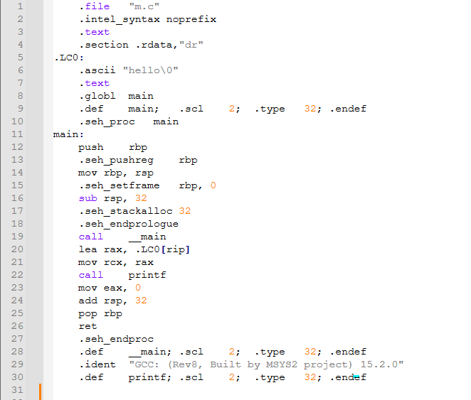
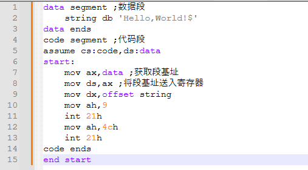

研究性学习综合报告
编写：xiaoditx
校对：马赫阳
〇.序言
计算机技术离不了各种编程语言，因此编程语言的发展可以在侧面上反应计算机技术的发展，编程语言的每一次演进都能见证着时代对于计算机技术的需求，可以说，编程语言的发展史，就是计算机技术的发展史。
本研究性学习报告将从"编程语言"的历史着手，分析各个时代下不同语言的特征，试图窥见计算机技术的发展历程，同时，也想借此分析出究竟如何选择适合自己的编程语言。
本文的基本结构如下：
- 编程语言的史前雏形
- 机器语言与汇编语言
- 高级语言的演进路径
- 现代编程语言的多维发展
- 编程语言的发展规律与选择建议
一.编程语言的诞生
人类是懒惰的，自古便是如此，东汉时期，一种名为提花机的东西被广泛运用，这种物件最早可以追溯到商代，它与它所处的时代几乎是格格不入的，是它的功能：
花本式提花机出现于东汉，又称花楼。它用线制花本贮存提花程序，再用衢线牵引经丝开口。花本是提花机上贮存纹样信息的一套程序，它由代表经线的脚子线和代表纬线的耳子线根据纹样要求编织而成。
借助客观物件记录程序以节省精力，提花机，在东汉之时，悄然埋下了一颗超前于时代的种子，随着丝绸之路被打通，提花机流入欧洲，在一代代工人、物理学家、数学家手下，逐渐生根发芽，长成了名为"计算机技术“的参天大树。
二.第一代编程语言——机器语言
人类和机器第一次”交流"，借助的，是机器语言，这是一种只由单纯的0与1构成的"语言"，这便是定义上的第一代计算机语言了
零和一的世界，是计算机的最底层的“本质”，因此足够基础，足够复杂，书写效率也相对较低，下面有一小段机器语言代码，大家可以感受一下
二进制表示：
10001011 01000101 00000100
01011011
10001001 11000011
十六进制表示：
8b 45 04
5b
89 c3可以明显看出，零和一的混搭使得代码内容难以辨认，因此人类也很难凭借所谓肌肉记忆之类的东西快速识别。
实际上，上面的一大串内容，甚至不足以支撑一个简单的加法运算，假如现在我们不小心写错了一个字符：
错误的：
10001011 01000101 00000100
01011011
10001101 11000011
正确的：
10001011 01000101 00000100
01011011
10001001 11000011有人可以做到一眼看出哪个是错的吗？大概是没有的。机器语言实现加法最起码需要三行内容，三行之内，纠错难度都尚且如此之高，实际使用用于软件开发时困难可想而知。
这就引出了机器语言的优点与弊病：
优点如下
- 最接近底层，运行足够快
- 机器可以直接识别运行，无需辅助的程序
- 不会出现多余无用的内容（程序体积小）
缺点如下：
- 记忆难度大
- 直面底层，学习难度大
- 对于机器的依赖性强，一种机器一种结构，难以移植
- 只有0、1，容易写错且纠错困难
不禁想到了王爽在《汇编语言》中此般描述：
书写和阅读机器码程序不是一件简单的工作，要记住所有抽象的二进制码。上面只是一个非常简单的小程序就暴露了机器码的灰色难懂和不易查错。写如此小的一个程序尚且如此，实际上一个有用的程序至少要有几十行机器码，那么，情况将怎么样呢？
三.汇编语言：程序员们对自然语言的第一次追逐
既然机器语言那么难写，那该怎么办呢？程序员们想了个办法：既然直接跟机器"聊天"有些困难，那我找个翻译不就好了？于是汇编语言便诞生了。
百度百科这么定义汇编语言：
汇编语言（Assembly Language）是任何一种用于电子计算机、微处理器、微控制器或其他可编程器件的低级语言，亦称为符号语言。
简单来说，汇编语言就像是一个万能的翻译官，这位"翻译官"制定了一种语言，当你需要和任意一个机器"对话"时，只要找到这位"翻译官"，对着他说出它制定的那套语言，他就可以根据情况用不同的表述转述给机器
举个例子，A机器规定0000是加法运算，B机器规定1010是加法运算，此时，汇编语言规定了加法运算就是+,那么我们写程序时只要写+就行了，汇编语言针对A机器，会传述给它0000，而对于B机器则是1010
正因汇编语言这种“因人而异”的翻译，在一定程度上解决了机器语言对机器的强依赖性问题，同时，通过诸如把0000变到+的操作，使得编写程序更加直观、更好记忆（1 0000 2好记好写还是1+2更加方便呢？这是很明显的吧）
因此，汇编语言有时也被称作助记符，也就是辅助记忆的文本的意思，参照如下定义：
助记符（mnemonic）是便于人们记忆、并能描述指令功能和指令操作数的符号，助记符是表明指令功能的英语单词或其缩写。
汇编的引入使得记忆不再枯燥且难以理解，比如有MOV、ADD、CALL等命令，只要稍微有些英语基础就可以很好的理解，也就能比二进制更加快速的记住了。
考虑到不同设计的机器之间有一些不可忽视的不同，汇编也衍生出了不同的版本，诸如IBM PC汇编、ARM汇编、GNU ASM、MASM、NASM等等，这里不去展开。
这里引用一篇文章中对汇编语言的评价：
汇编语言的出现，让程序员们从繁琐的二进制编程中解放出来，能够更加专注于程序的逻辑和功能实现，为计算机软件的发展奠定了重要基础
总的来说，汇编语言就是让人达到"知其然而不知其所以然"的状态，着对于计算机技术的学习在大多数时候实际上是个好的状态，因为这样就可以摆脱繁琐的底层原理，当想用计算机解决某个问题时，就能去直接想使用怎么样的算法，而不是先看看机器的底层架构是如何的。
tips：笔者非常喜欢汇编语言，它贴近底层，是打破计算机科学底层大门的钥匙，这是极具挑战性的语言，也是最能学到软件运行原理的语言
四.高级语言的黎明：C/C++的革命
1. C语言的诞生
1972年，贝尔实验室的丹尼斯·麦卡利斯泰尔·里奇在开发UNIX操作系统时创造了C语言。这是一种与汇编相比更加贴近自然语言的语言，与汇编语言相比具有更强的可读性。
下面是一段经典的输出Hello World的代码，这几乎是每个学习C语言开发的人所经历的共同的第一课。
#include <stdio.h>
int main() {
printf("Hello, World!\n");
return 0;
}这五行内容，完成了一个工作：在控制台上输出一串文本
有人可能觉得这是一项简单的事情，认为C语言仅此而已，并没有什么伟大的意义，那这就大错特错了，我们来看一眼汇编语言的相同功能的实现吧：
data segment ;数据段
string db 'Hello,World!$'
data ends
code segment ;代码段
assume cs:code,ds:data
start:
mov ax,data ;获取段基址
mov ds,ax ;将段基址送入寄存器
mov dx,offset string
mov ah,9
int 21h
mov ah,4ch
int 21h
code ends
end start想要写出这么一串汇编代码，起码需要知道的知识有：寄存器的概念、代码段是什么、数据段是什么、基址是什么、汇编的诸多语法，多数的汇编语言教材写过五十多页依然需要外部软件辅助否则不能在软件层面上看到一点效果，C语言明显的就好多了
对于C语言的那几行，大多数教程几乎不超过一千字：什么是头文件，什么是主函数，这些概念都很简单，讲讲就能明白
因此C语言的有点就是如下所示的几条：
- 从软件层面而非硬件层面出发，降低学习成本
- 原生支持大量操作，简化书写，便于阅读
当然，缺点也是有的，当我们使用gcc -S -masm=intel m.c -o m.s命令编译程序时，可以看到编译器将C代码翻译成了这样的内容：

总共是三十行整，那么我们这里用通常的写法写出等效的汇编代码：（输出内容多了个词但是不影响）

纯汇编的版本只用了十五行，也就是说，编译器多写了一倍，只是实现了相同的效果，事实上，这种差异在编译后期更加明显，通常的gcc编译程序在链接阶段需要连接一些库文件，最终成品有时比纯汇编大了几十倍都有可能。
这便是C语言的缺点所在，使用结果上的“多写”换来了过程上的“少写”，究其原因还是因为模板化，以这里的输出为例，我们要输出的内容是文本，使用了printf函数，但这个函数也能输出整数、浮点数等，为了保证普适性，编译器不得不都把适配其他数据类型的代码也写进了编译后的文件，但实际上有的功能我们并不会用到。
tips：笔者其实对C没什么好感，抛开内存泄漏的问题，过程语言本身就不是那么方便，有时用C++写软件不得不用上C的语法，说实话，真是够麻烦的（听说目前的GCC编译器还是用C++写的，挺好笑的）
2. C++新生
C语言确实很强大，但这并不意味着人们就已经满足于C语言的开发效率，C语言仍然有些不尽如人意的地方：C语言是一种过程语言，代码复用率不够，因为自身设计问题，容易出现危险的类型转换与各种错误，同时有很高的内存泄漏风险，开发过程中，C语言的报错机制并不完善且仅在万行代码内能保证稳定的运行
因此，在1983年，C++出现了，丹麦的本贾尼·斯特劳斯特卢普教授在C语言基础上增加类等概念，创造了所谓“支持面向对象编程”的C++，这种语言的内存泄漏率明显降低，对百万行级别的大项目也做了支持
C++的出现无疑是里程碑式的，随着它的出现，多态、封装、对象、继承、命名空间、虚函数、模板等概念迅速流行，也使得之后的语言或多或少受其影响（如Java），将语言的抽象能力视为重中之重
下面是c++的一些特性展示：
class Person {
public:
virtual void SenRen_BanKa() = 0;
};
class DiYongJie : public Person {
public:
std::string play = "YuZu soft!"
void SenRen_BanKa() override {
std::cout << "Ciallo!" << std::endl;
}
};虽然增添了很多概念，但C++与C语言仍是强关联的，对于C语言的代码，C++基本上都能兼容（但是老的头文件肯定是要替换掉的），两者语言上实际上很相似：
#include<iostream>
using namespace std;
int main(){
cout<<"Hello World";
return 0;
}这种保留与进化并存使得C++快速成功，大型软件开发因此成为可能，至今仍广泛应用于游戏引擎、操作系统等高性能领域。
3. 特点对比
| 特性 | C | C++ |
|---|---|---|
| 编程范式 | 过程式 | 多范式 |
| 内存管理 | 手动 | 手动+智能指针 |
| 标准库大小 | 精简 | 庞大 |
| 命名空间管理 | 缺乏 | 完善 |
| 头文件包含机制 | 原始 | 改进 |
| 应用场景 | 嵌入式系统 | 大型商业软件 |
tips：由于C++在保留了大量C风格的操作的同时加入了优秀便捷的标准库，有时C++甚至被算法界戏称为"C with STL"
五.Java：实现跨平台梦想
高级语言诞生一段时间后，互联网蓬勃发展，但当时仅仅依赖着HTML这种标记语言来显示静态页面，所以当时访问互联网实质上就是浏览在线的word文档，这大大限制了互联网的潜能，人们很快注意到了这一点，都在寻找一种让网站动起来的手段，但早期语言对设备的要求很专一，电脑软件是坚决不能再单片机等硬件上运行的，所以人们探究的方向就变成了拥有一种技术去开发具有跨平台传播能力的软件
在这种背景下，Sun公司推出了Java语言，伴随着"Write Once, Run Anywhere"的革命性理念，也就是“一次开发，多平台运行”，一经问世便迅速成功，1996年1月，Sun公司发布了Java的第一个开发工具包（JDK 1.0），标志着Java成为一种独立的开发工具。仅仅八个月后，就有约8.3万个网页应用了Java技术来制作
下面是java的代码：
public class Main {
public static void main(String[] args) {
System.out.println("Hello World!");
}
}实际上，java依旧保留了C/C++的很多思想，因为它本身是由Sun公司研发的Oak语言发展来的，而Oak语言，就是Sun公司为了开发单片机程序而制作的简化的C++
由于Java在设计之初就是为了开发消费类家用电子产品软件，因此对于“可靠性”做了很多优化，因此，Java拥有如下几个有点：
- 由C/C++演进，易上手，语法更简洁
- 移取了指针这一概念，硬件对于开发人员几乎完全黑盒，保证了软件安全性的同时还降低了学习成本
- 具有高可移植性
这些优点使得Java在企业级应用开发中占据主导地位，Android开发的基础语言之一，但为了可移植而带来的性能损耗也使其不适合高性能计算场景。
tips：Java以罗嗦著称，是许多程序员调侃的点，说实话，我对Java早期的印象就是“把C++的类单独拉出来了”
六.Python：简洁哲学的胜利
1.简洁的语法
1989年，吉多·范罗苏姆设计的Python将代码可读性推向极致，通过使用极其接近自然语言的语法，python的上手难度大大减小，大量编程初学者纷纷涌来学习
下面是一个python输出Hello World的示例程序：
print("Hello World")仅仅一行，python便可以完成输出，这就体现出了它的一大特色：简洁，python对于在它先前的语言一些冗长的内容进行了化简，使得开发者得以聚焦于真正的算法而非功能实现。
2.强大的标准库
将Python与C++相比，一个不争的事实是，C++的int型变量只能存储-2,147,483,648~2,147,483,647之间的内容，即使是最长的long long型变量，都只能表示-9,223,372,036,854,775,808~9,223,372,036,854,775,807的内容，而python的int变量却无任何限制，可以存储任意大小的数据而不溢出。
上面说到的差异，我们带入实际开发中，对比一下C++和python的高精计算就能明白，算法平台洛谷上有一道题目：求1到n的阶乘之和，我们来看看python的答案：
n=int(input())
ans=0#最终答案存储
rec=1#阶乘累加的变量
for i in range(1,n+1):
rec*=i
ans+=rec
print(ans)几行就搞定了，这是个很简单的题目，对吧？
可是洛谷上标的难度还是相对不小的，为什么呢？下面来看C++代码就能明白了：
#include<iostream>
#include<cstring>
using namespace std;
struct bigint {
int len, nm[1000]; // 使用结构体模拟大整数
bigint() { // 无参数的初始化
len = 0; // 初始长度为0
memset(nm, 0, sizeof(nm)); // 初始化为0
}
bigint(int num) { // 用int初始化
memset(nm, 0, sizeof(nm));
len = 0;
do {
nm[len++] = num % 10;
num /= 10;
} while (num);
}
int operator[](int idx) const { // 返回对应位的值
return nm[idx];
}
void process() { // 处理进位
int carry = 0;
for (int i = 0; i < 1000; ++i) {
nm[i] += carry;
carry = nm[i] / 10;
nm[i] %= 10;
}
zero_processing();
}
void zero_processing() { // 重置长度
len = 0;
for (int i = 999; i >= 0; --i) {
if (nm[i] != 0) {
len = i + 1;
break;
}
}
if (len == 0) len = 1; // 处理全0的情况
}
void print() { // 输出
for (int i = len - 1; i >= 0; --i)
cout << nm[i];
}
};
bigint operator+(const bigint& a, const bigint& b) {
bigint c;
for (int i = 0; i < max(a.len, b.len); ++i)
c.nm[i] = a[i] + b[i];
c.process();
return c;
}
bigint operator*(const bigint& a, int b) {
bigint c;
for (int i = 0; i < a.len; ++i)
c.nm[i] = a[i] * b;
c.process();
return c;
}
int main() {
int n;
cin >> n;
bigint ans(0), tmp(1);
for (int i = 1; i <= n; ++i) {
tmp = tmp * i;
ans = ans + tmp;
}
ans.print();
return 0;
}C++写这一题是异常的长，这就是因为这一题数据计算结果会很长，C++需要使用模拟算法来防止结果溢出，而python本身就有一套模拟机制，无需用户自行编写。
python的优势
从定义上讲，python是个解释型语言，具有和Java一样的灵活性和高可移植性，而作为一个脚本语言，python又更擅长于数据计算等自动化工作，因此被广泛应用于大语言模型、网络爬虫中。
python的优点如下：
- 标准库功能强大，操作简洁
- 开源社区持续维护
- 第三方库丰富
- 解释型语言调试省时
tips：近几年有人把python喷得一无是处，认为解释型语言运行效率奇低，我只能说各有各的好处，就比如说python可以在信息技术必修一就讲解TK这个窗口库，而C++还要自己在MSDN中摸爬滚打找文档（亲身经历）
七.中文互联网的探索
1. 易语言
编程语言一直发展，延伸到了中国，2000年，一款中文编程语言横空出世，采用表格编程，同样为解释运行，使用简单的中文进行软件开发，这就是易语言：
.如果（用户输入=="你好"）
输出框.显示（"你好，世界！"）
.否则
输出框.显示（"无法识别"）与其他编程语言不同，易语言的第一课直接就是窗口的开发，软件开发周期短、中文学习编程难度低，一瞬间吸引了很多人前来
下面是一张易语言的代码编写页面的截图：

易语言优点如下：
- 降低英语门槛
- 简化开发，加速开发效率
- 强大的官方组件，涵盖各方面内容
缺点也是有的：
- 仅限于Windows平台
- 缺乏开源生态
- 仅支持三十二位编译，运行效率不足
2. 文言（Wenyan-lang）
中文编程在易语言之后兴起了一段时间，在2019年又兴起了一款名为文言的编程语言
顾名思义，文言，就是使用文言文来编写程序，这使得其几乎变为了一种艺术形式而非编程工具：
吾有一數。曰三。名之曰「甲」。
為是「甲」遍。
吾有一言。曰「「問天地好在。」」。書之。
云云。文言编程语言属于一种实验性的语言，用于传播文言文化与计算机文化，与chicken语言、///、glass语言、Piet语言等同样，属于是一种半艺术品，这标志着编程语言的高度发展，使得人们开始考虑探索具有一定的创造性、艺术性的分支
tips：易语言是笔者接触的第一款编程语言，这绝对是个“新手友好型语言”，因为实在是太方便了，图形化界面下就可以完成窗口设计，以至于所有教程的第一课都是从窗口开始讲的，正因如此我才在之后觉得其它语言的GUI创建极为麻烦
八.总体总结：发展规律
根据上面的几个例子，我们可以看出语言的变化特点：
-
抽象层级提升
编程语言不断的向着“抽象”发展，代码复用率逐渐提高，使得开发效率得以提高
演进方式 ：机器指令 → 符号化 → 结构化 → 面向对象 → 函数式编程
-
效率平衡演进
开发人员们更乐意讨论开发和使用孰轻孰重
演进方式 ：执行效率优先 → 开发效率优先 → 两者动态平衡
-
领域专业化
各个领域出现了专门性的语言，典型的如Windows系统下的
.rc文件、Inno Setup的专门编写安装包的语言演进方式 ：通用语言 → 领域特定语言（DSL）
-
语法简约化 演进方式 ：冗余语法 → 简洁表达 → 自然语言逼近（第五代编程语言探索方向）
九.选择建议
我们研究得出，编程语言各有所长，语言选取，应当针对自己的需求合理搭配，考虑开发效率与应用场景，下面有一些推荐的搭配方案
-
底层开发
- 推荐：C/Rust/少量汇编
- 场景：操作系统、嵌入式系统
- 优点：贴近底层，可以编译为多种形态
-
快速开发
- 推荐：Python/JavaScript/少量shell/易语言
- 场景：Web应用、数据分析
- 优点：现成函数，高效开发
-
跨平台需求
- 推荐：Java/Kotlin/QT框架
- 场景：企业级应用、移动开发
- 优点：跨平台，好移植
-
学术研究
- 推荐：Python/Julia
- 场景：科学计算、机器学习
- 优点：简化代码，不让写代码成为累赘
-
兴趣驱动
- 尝试：文言/易语言
- 价值：理解编程本质，培养计算思维
选取编程语言是，以下内容是关键考量维度：
- 项目性能要求：高性能需求坚决不找高级语言，专业计算尽量不找低级语言
- 团队技术栈现状：根据团队成员的技能决定
- 社区生态成熟度：社区是开发的支柱，Rust社区就是典型的案例，良好成熟的社区是总能在各处帮助到每一位开发者
- 个人学习曲线：根据个人的学习计划选择
十.后记
这个主题是我很久以前便想要开始研究的，借此次研究性学习得以实现，自是无比兴奋的，因而忙前忙后做了许多事情，虽然也确实添了些乱。
作为文档的编写者，我就不如组长那般有如此身后的专业素养，和转于一个研究方向的钻劲了，只好接着自己学的不精的知识与自诩尚可的文学水平，苟且写下了这些最终呈现的文字，终究是有些惶恐，担心写下的内容存在瑕疵，如果各位读者能够发现文章中的错误，无论大小，万望可以在GitHub上的Issue中提交。
十一.再版随笔
语言这个东西本身就是充满争议的，没有绝对的谁对谁错谁好谁坏，就像php被诸多程序员以“世界上最好的语言”来反讽，但终归还是广泛使用的，管它是什么语言，只要适合自己就是好语言。
前一段时间看了个笑话，是C++和Python的对话，下面大致的记录一下
C++问Python“你叫什么名字”，Python不回答，C++认为是自己不够礼貌，于是开始介绍自己，结果在说自己名字时卡壳了，因为出现了栈错误，它只能一边报错一边离开，等到C++走远了，Python这才大喊：“Python！”
这笑话是想讲C++不好写，时不时就出错崩溃，而Python反应很慢，可能C++几百行代码都跑完了它还在入口，这个笑话做得很好的一点就是，同时阐明了C++和Python的缺点，也就是说，传达出了没有完美的语言这一概念
参考文献
- 川合秀实《三十天自制操作系统》| 人民邮电出版社
- 编程语言发展简史
- 作为程序员必须知道的编程语言编年史
- 王爽《汇编语言》| 清华大学出版社
- 百度百科-汇编语言
- 百度百科-助记符
- Deep Learning - Ian Goodfellow、Yoshua Bengio、Aaron Courville
- 黑马程序员《网页设计与制作项目教程》（第2版） | 人民邮电出版社
- 从机器到智能：汇编语言的前世今生与未来
- 洛谷-P1009-阶乘之和
- Java
- 张毅刚、赵光权、刘旺《单片机原理及应用》第三版 | 高等教育出版社
- 郭卫斌、罗勇军《算法竞赛入门到进阶》 | 清华大学出版社
- MSDN-Microsoft Learn
- C++、C 和汇编程序\C++语法参考
- C++ reference
- 汪楚奇《深入浅出程序设计竞赛》 | 高等教育出版社
- 郁红英、王磊、武磊、李春强《计算机操作系统》（第三版） | 清华大学出版社
声明
文中“机器语言”板块中，机器语言代码由汇编代码通过Online x86 and x64 Intel Instruction Assembler实现，不确定是否存在转换问题，因此不具参考价值，只用于辅助理解机器语言的不便捷性。